<!DOCTYPE lake>
<h2 data-lake-id="WGXub" id="WGXub"><span data-lake-id="u147301fa" id="u147301fa">学习目标</span></h2><ol list="u24a248bc"><li data-lake-id="uefbbe9af" fid="u8a130cd8" id="uefbbe9af"><span data-lake-id="u4db14fd3" id="u4db14fd3">学会使用逻辑分析仪分析调试电路中的IO信号</span></li></ol><h2 data-lake-id="WCCgJ" id="WCCgJ"><span data-lake-id="uf13bce83" id="uf13bce83">学习内容</span></h2><h3 data-lake-id="zBOBt" id="zBOBt"><span data-lake-id="ue3694961" id="ue3694961">什么是逻辑分析仪</span></h3><p data-lake-id="u7681a52e" id="u7681a52e"><span data-lake-id="u3a00a66f" id="u3a00a66f">逻辑分析仪（Logic Analyzer）是一种工具，用于分析数字信号，例如控制信号，时钟信号等等。它可以用于调试和验证数字电路、嵌入式系统等等。</span></p><p data-lake-id="ufa07b14c" id="ufa07b14c">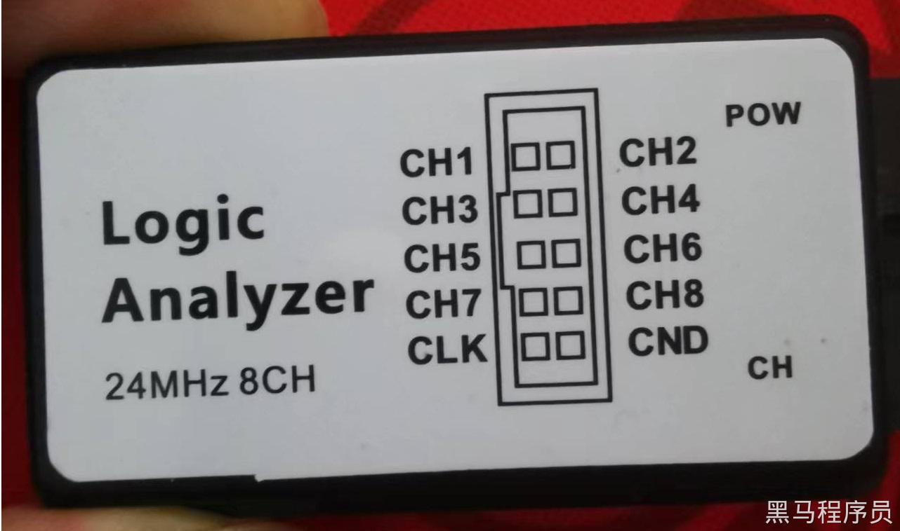</p><p data-lake-id="uba18b2d2" id="uba18b2d2"><span data-lake-id="ufc7d7aba" id="ufc7d7aba">本教程采用的是mini版USB 逻辑分析仪。总共有10个端口，其中8个为分析通道，一个时钟信号，一个是GND。</span></p><p data-lake-id="ucff8fe01" id="ucff8fe01"><span data-lake-id="u1c863385" id="u1c863385">8路通道可以同时测8路信号。</span></p><h3 data-lake-id="zwgib" id="zwgib"><span data-lake-id="u82a8f0a5" id="u82a8f0a5">软件安装</span></h3><p data-lake-id="u5c32f43c" id="u5c32f43c"><span data-lake-id="ue4f624cb" id="ue4f624cb">安装提供的安装包，根据实际情况进行安装选择所需要的版本</span></p><p data-lake-id="u2afc815c" id="u2afc815c"></p><ul list="u50dde5d4"><li data-lake-id="u149d0992" fid="ub20a66ab" id="u149d0992"><span data-lake-id="ud4c3145b" id="ud4c3145b">安装2.4.9版本流程</span></li></ul><p data-lake-id="u0389db07" id="u0389db07">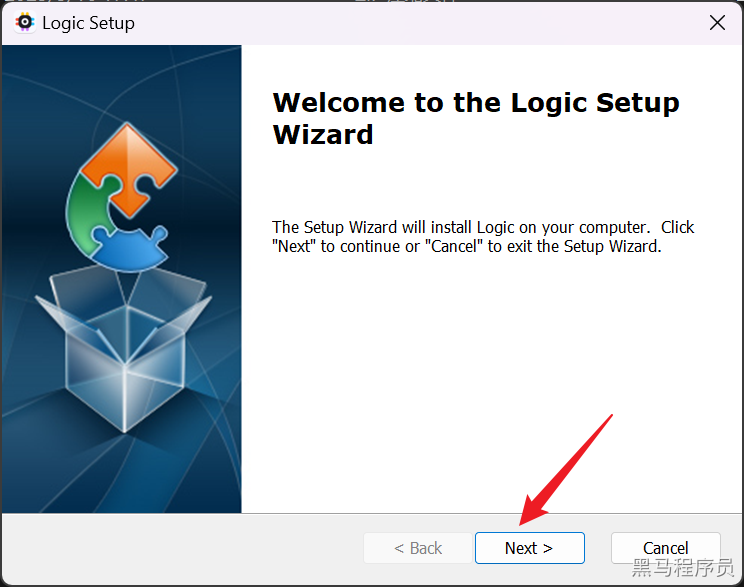</p><p data-lake-id="u6d8dde9d" id="u6d8dde9d">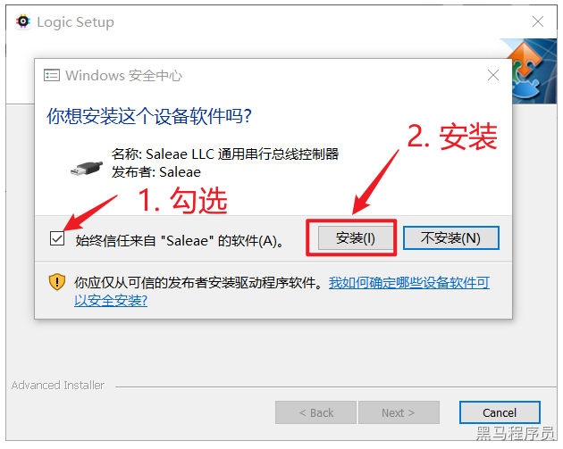</p><p data-lake-id="u61091547" id="u61091547">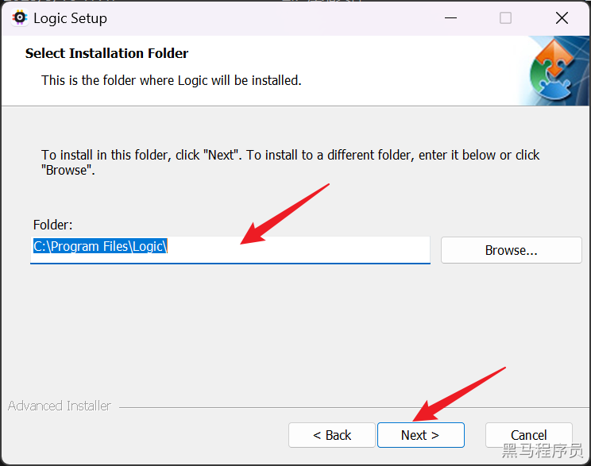</p><p data-lake-id="u8326d29e" id="u8326d29e">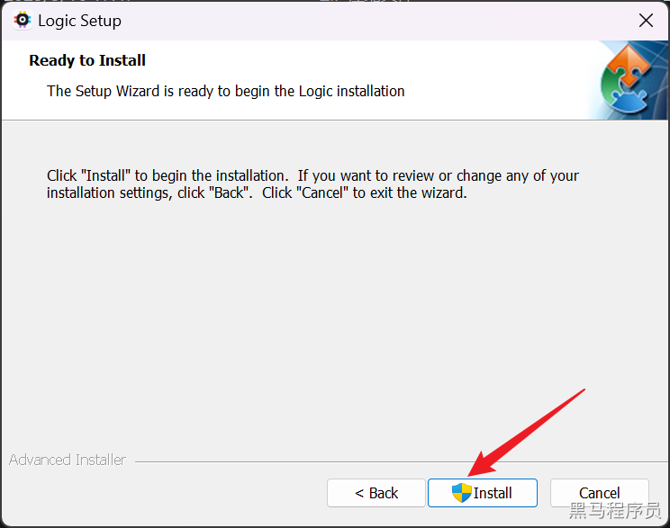</p><p data-lake-id="ud9fce73d" id="ud9fce73d">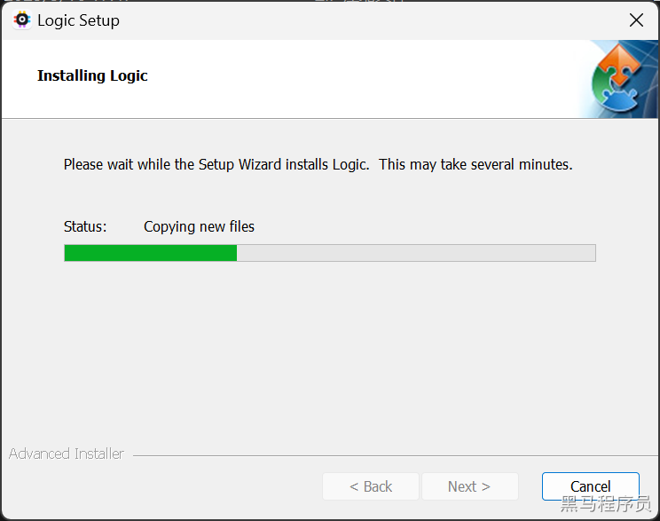</p><p data-lake-id="u70552b38" id="u70552b38">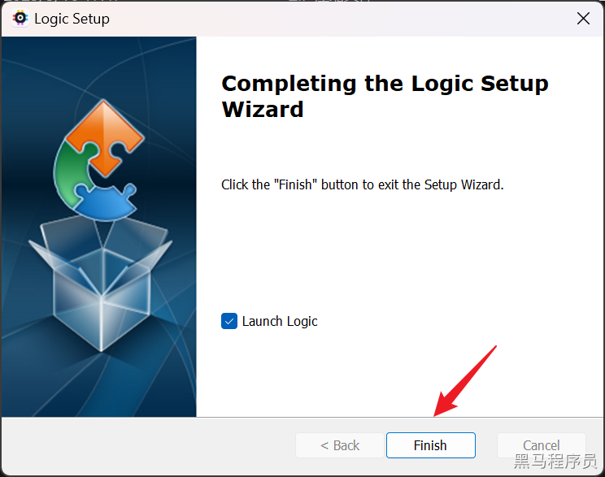</p><p data-lake-id="ubd7adef7" id="ubd7adef7"><br/></p><p data-lake-id="u60dd672c" id="u60dd672c"><br/></p><h3 data-lake-id="j5AeY" id="j5AeY"><span data-lake-id="u4bfd9548" id="u4bfd9548">功能介绍</span></h3><p data-lake-id="u24168976" id="u24168976">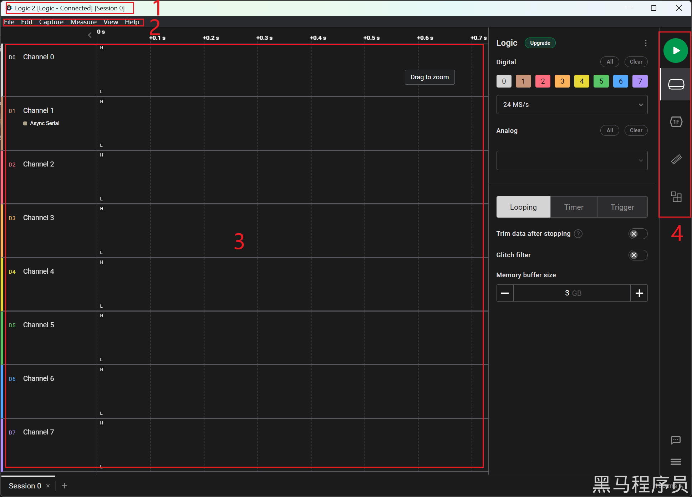</p><p data-lake-id="u388886ed" id="u388886ed"><span data-lake-id="u6dd00828" id="u6dd00828">大致关注几个区，后续过程中我们会陆续学会所有功能。</span></p><ul list="u3b77a1d0"><li data-lake-id="u380aee1b" fid="ubd6adf42" id="u380aee1b"><span data-lake-id="u88a67fcf" id="u88a67fcf">主界面中的顶部，如果显示</span><code data-lake-id="u4fcb2517" id="u4fcb2517"><span data-lake-id="ue2cac12f" id="ue2cac12f">Disconnected</span></code><span data-lake-id="u2c2f2192" id="u2c2f2192">，说明逻辑分析仪没有和PC电脑连接；如果显示</span><code data-lake-id="u8e8e0d1a" id="u8e8e0d1a"><span data-lake-id="ude967edb" id="ude967edb">Connected</span></code><span data-lake-id="u7c9d1a6b" id="u7c9d1a6b">,表示已经连接</span></li><li data-lake-id="ub6f98a8b" fid="ubd6adf42" id="ub6f98a8b"><span data-lake-id="u633ee015" id="u633ee015">菜单部分</span></li><li data-lake-id="u4e25a298" fid="ubd6adf42" id="u4e25a298"><span data-lake-id="u3743c8b7" id="u3743c8b7">8个调试通道</span></li><li data-lake-id="u81d35ebd" fid="ubd6adf42" id="u81d35ebd"><span data-lake-id="u86bb7e99" id="u86bb7e99">右侧功能部分，绿色按钮为调试按钮</span></li></ul><h3 data-lake-id="Jvrte" id="Jvrte"><span data-lake-id="u5942b2ff" id="u5942b2ff">使用逻辑分析仪测试点灯</span></h3><h4 data-lake-id="MMrI5" id="MMrI5"><span data-lake-id="uf0d643db" id="uf0d643db">分析测试</span></h4><p data-lake-id="u145f91fd" id="u145f91fd"></p><p data-lake-id="uc4051138" id="uc4051138"><span data-lake-id="uafa6c74a" id="uafa6c74a">测试P5.3端口是否是1秒钟高电平1秒钟低电平</span></p><h4 data-lake-id="S8BR4" id="S8BR4"><span data-lake-id="u3d3db5fb" id="u3d3db5fb">接线</span></h4><p data-lake-id="uef8bc9b6" id="uef8bc9b6"><span data-lake-id="u1520b3c2" id="u1520b3c2">将逻辑分析仪的通道1线和开发板中的P5.3引脚连接。</span></p><p data-lake-id="ud5e29494" id="ud5e29494"><span data-lake-id="u6e224dd5" id="u6e224dd5">将逻辑分析仪的GND线和开发板的GND连接。</span></p><p data-lake-id="ud214d83f" id="ud214d83f">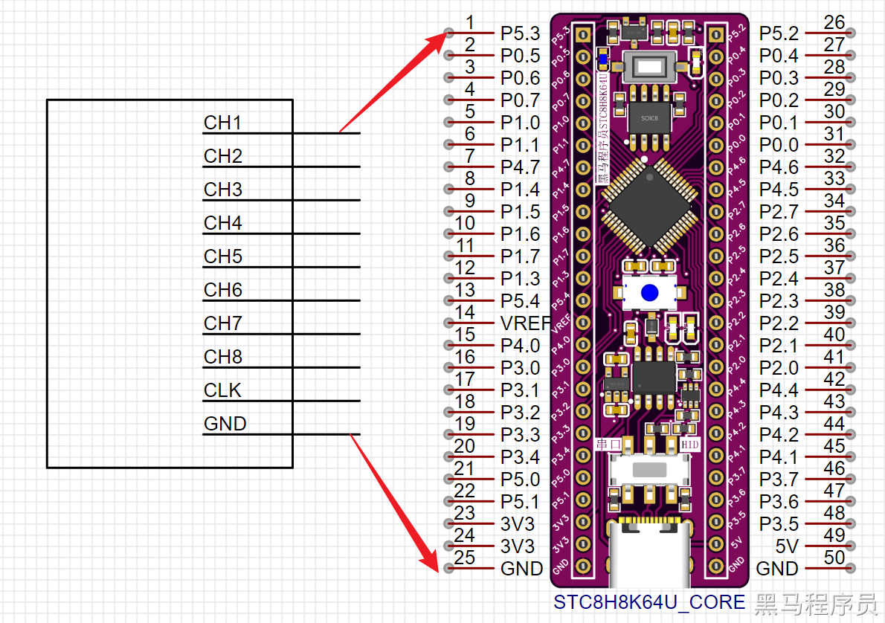</p><h4 data-lake-id="rpZ6P" id="rpZ6P"><span data-lake-id="u680b9d6b" id="u680b9d6b">测试</span></h4><p data-lake-id="ua0f58e07" id="ua0f58e07"><span data-lake-id="ud5196814" id="ud5196814">将LED的代码烧录到开发板中，并且运行。</span></p><p data-lake-id="u25ed8083" id="u25ed8083"><span data-lake-id="u9e3204f6" id="u9e3204f6">打开逻辑分析仪的软件(Logic)，查看是否和逻辑分析仪连接，点击按钮进行测试</span></p><p data-lake-id="u92cc45aa" id="u92cc45aa">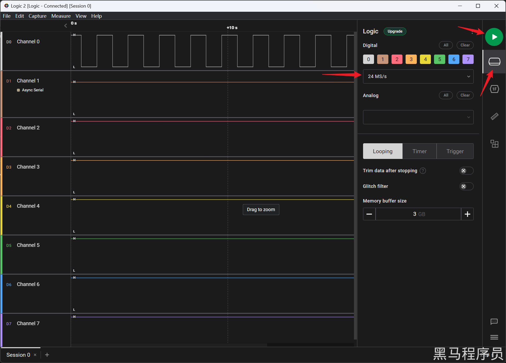</p><ul list="ub9a9bf45"><li data-lake-id="u7df3c809" fid="u0c56c8e9" id="u7df3c809"><span data-lake-id="u9a8daa27" id="u9a8daa27">配置采样率，最高24MS/s</span></li><li data-lake-id="u5fa54ea6" fid="u0c56c8e9" id="u5fa54ea6"><span data-lake-id="ub02a4f0b" id="ub02a4f0b">点击绿色按钮进行采用</span></li></ul><p data-lake-id="ue78c7054" id="ue78c7054"><span data-lake-id="udde7d464" id="udde7d464">观察通道1，通过鼠标滚轮缩放，查看波形。</span></p><p data-lake-id="ubfa538c1" id="ubfa538c1">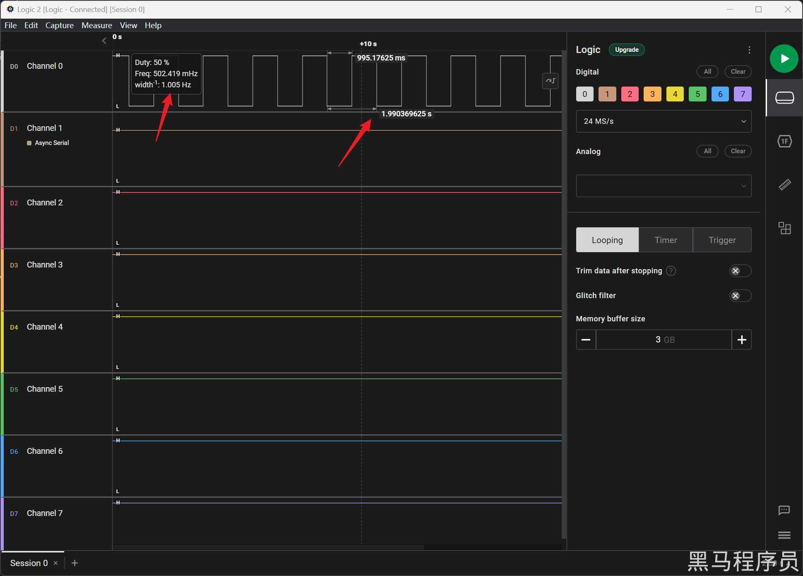</p><p data-lake-id="u589b602c" id="u589b602c"><span data-lake-id="u780a2932" id="u780a2932">鼠标放到悬浮窗上，可以查看高低电平持续时间。</span></p><p data-lake-id="u0b22f42a" id="u0b22f42a"><span data-lake-id="ucbebfe17" id="ucbebfe17">​</span><br/></p><blockquote class="lake-alert lake-alert-warning" data-lake-id="uf276c3d8" id="uf276c3d8"><p data-lake-id="ucf74b93f" id="ucf74b93f"><span data-lake-id="ub19291e6" id="ub19291e6">注意：如果逻辑分析仪采集数据时频繁中断，可尝试将采样率降低至</span><code data-lake-id="u5792c3a6" id="u5792c3a6"><span data-lake-id="u32e83d50" id="u32e83d50">1MS/s</span></code></p></blockquote><h2 data-lake-id="BW3JV" id="BW3JV"><span data-lake-id="u54c0ca9e" id="u54c0ca9e">练习题</span></h2><ol list="u94a3b385"><li data-lake-id="ud75e2203" fid="u10f4a04f" id="ud75e2203"><span data-lake-id="uf6a69660" id="uf6a69660">安装逻辑分析仪调试软件</span></li><li data-lake-id="u7d59d7f6" fid="u10f4a04f" id="u7d59d7f6"><span data-lake-id="uabf69f54" id="uabf69f54">使用逻辑分析仪调试IO口</span></li><li data-lake-id="u78fda02d" fid="u10f4a04f" id="u78fda02d"><span data-lake-id="ude3e6213" id="ude3e6213">解决连不上的问题</span></li></ol><p data-lake-id="u55f4ca09" id="u55f4ca09"><br/></p>